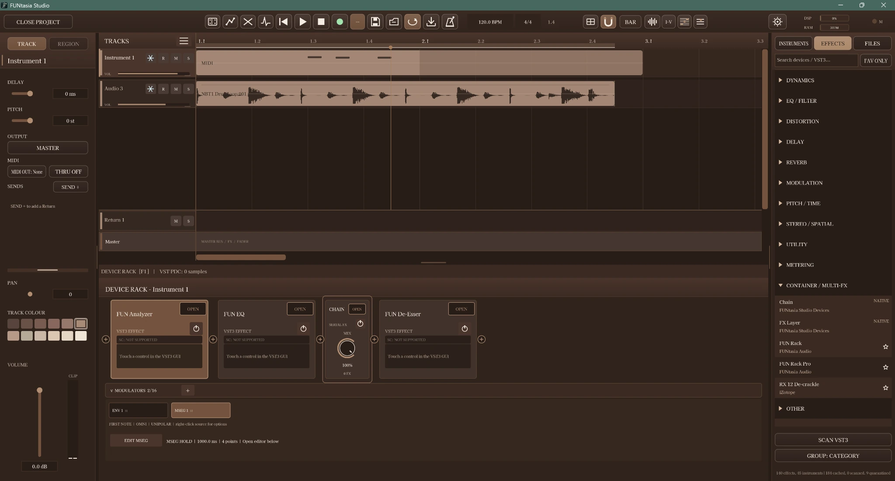
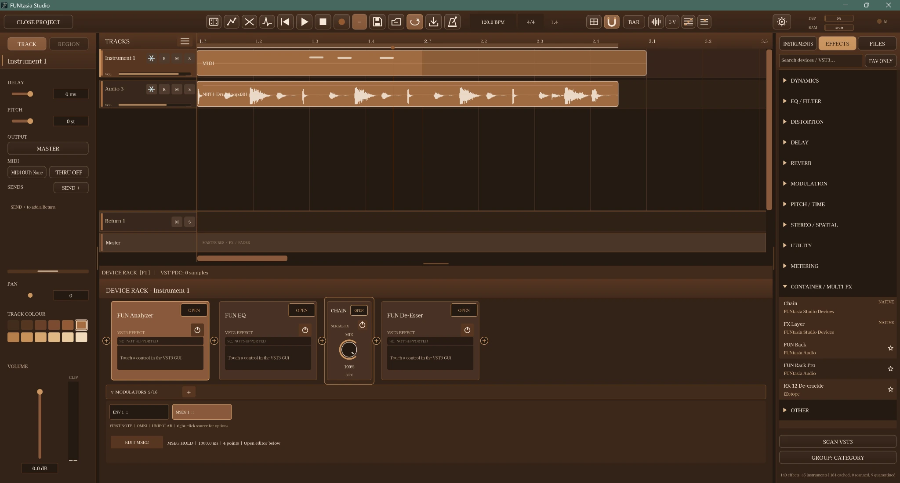
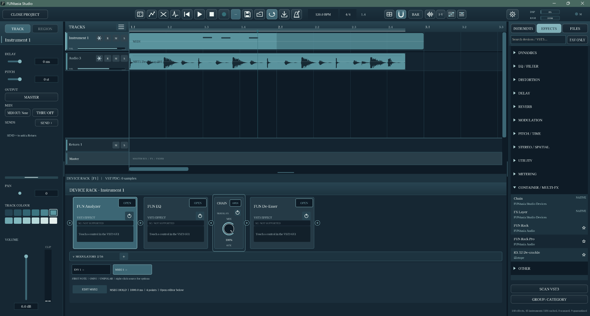

混音器
调整音量平衡，了解不同轨道如何组成完整的混音。
FUNtasia Studio / 免费教育用途音频软件
在这里，音乐制作的基础知识可以亲眼观察、亲手操作和自由尝试。不受价格门槛限制，也没有唯一的创作方式。
01 / 打造自己的 Studio
改变工作空间的氛围
从 Sakura Pink 到 Aquamarine，共有九种命名配色。无论是沉稳的炭灰色还是深森林绿，都可以让同一个创作空间呈现不同面貌。点击预览图可放大查看。








窗口图标和启动画面会随主题变化。Original Sage 使用 Forest 启动画面。图中均为真实界面预览；在小屏幕上可横向滑动浏览九种主题。
02 / 无需频繁切换工具
现代化编辑流程
在统一的编辑环境中直接操作音符、片段与参数，无需为了每个小动作不断切换专用工具，让创作流程更加自然。

03 / 调整每个细节
创意掌控
叠加编曲层次、探索乐器与效果器，体验推子、参数自动化和信号路由如何改变声音。丰富的音色工具就在触手可及的位置。

04 / 相互连接的工作空间
从实践中学习
无需离开学习环境，就能练习编曲、音频处理与音量平衡。每个区域都展示音乐制作的不同方面。
调整音量平衡，了解不同轨道如何组成完整的混音。

结合实际工程探索乐器、效果器、效果链和分层处理。

浏览声音素材，并使用原声或电子预览音源试听一小节的 MIDI 鼓组填充。
05 / 可亲自探索的乐理
在声音中理解音乐
内置的学习视图帮助你研究音阶、和弦与和弦配置。无论刚入门还是重温基础，都能在好奇心与实际操作之间自由切换。

学习调性关系，并探索包括实验性 Ruri 风格级数记谱法在内的音阶。

比较不同的音符排列方式及其对和弦色彩的影响。

在和弦配置与乐理工具中，从另一种乐器的角度探索音乐。
FUNtasia Studio 的初衷
无论是第一次制作歌曲的年轻人、需要考虑日常开支的人，还是能够购买昂贵设备但只想学习的人，FUNtasia Studio 都免费提供同样的学习环境。
这是用于研究大师课素材、理解音乐制作流程的教育与实验空间，并非承诺达到专业制作环境的可靠性。
不同的境遇，同样的好奇心，同样的学习机会。
06 / 开始探索
Beta 1.4.0 · 2026 年 11 月
截至 Beta 1.4.0 的更新／开发亮点
Cadd9 → 1^235、Csus2 → 1^25。可在调性与和弦指南、音阶／和弦配置浏览器、吉他指板和和弦轨道中探索。Ruri 记谱法仍为实验性功能，Bounce／Undo 保护不能避免所有崩溃。本软件仍是以学习为目的的预发布版本，功能可能继续变化。
FUNtasia Studio Beta 1.4.0
适用于 Windows 的免费教育软件。可在 GitHub 发行页面查看下载 ZIP、附带文件、安装方法及注意事项。
了解 Beta 1.4.0 的新功能，请阅读 note 图文更新介绍（日语）↗。更多开发故事请见 Hʉeliang 的 note 主页 ↗。
07 / 支持开发
支持 Studio
FUNtasia Studio 免费提供给所有希望探索和学习音乐制作的人，不论经济状况如何。我们希望在坚持这一承诺的同时，持续完善这一学习空间。
软件的开发与维护需要时间和资金，包括开发设备以及维持日常工作的成本。如果你认同我们的理念且条件允许，欢迎考虑给予支持。
我们的 Amazon 心愿单包含开发设备、食品与日用品。心愿单中的礼物能切实帮助我们继续开发。
通过 Amazon 心愿单支持 ↗所有支持完全自愿。无论是否捐赠，FUNtasia Studio 都将保持免费；请只在自己经济条件允许时支持。